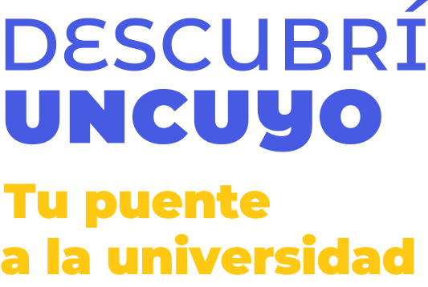
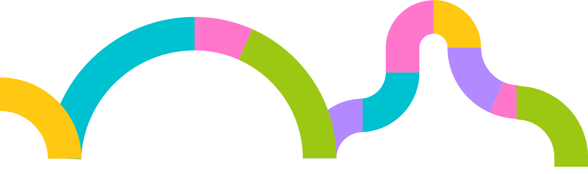

Es una trayectoria
Comienza antes de la inscripción y continúa durante los primeros pasos en la vida universitaria.

Ingreso UNCUYOPARA EMPEZAR, UNA PREGUNTA
Escaneamos el código o ingresamos a Mentimeter para construir una respuesta colectiva.
EL INGRESO COMO POLÍTICA DE GESTIÓN
Comienza antes de la inscripción y continúa durante los primeros pasos en la vida universitaria.
Organización, articulación y recursos para sostener acciones de ingreso en toda la Universidad.
Rectorado, Unidades Académicas y equipos de ingreso intervienen en distintos momentos.
ACCIONES PENSADAS POR POBLACIONES
Generar experiencias, información y vínculos antes de que exista una decisión de inscripción.
Acompañar a quienes desean postularse sin haber completado el nivel secundario.
Trabajar la elección y facilitar la incorporación a la vida universitaria.
UNA METODOLOGÍA DE TRABAJO COMÚN
Leer situaciones, poblaciones y contextos concretos.
Coordinar con UUAA, escuelas, municipios y equipos.
Combinar propuestas presenciales y virtuales.
Dar continuidad a los distintos momentos del ingreso.
EL RECORRIDO

SOCIEDAD EN GENERAL
Recibir escuelas en el campus y hacer posible una primera experiencia universitaria.
Llevar orientación e información a municipios, CENS y escuelas.
Mantener el vínculo mediante Aulas Abiertas, página web y redes sociales.
PUNTO DE ENCUENTRO
Las visitas de escuelas secundarias al campus convierten un espacio desconocido en un lugar posible.
Recorrer el campus y reconocer sus espacios.
Explorar carreras, servicios y vida universitaria.
Conversar con estudiantes y equipos.
Construir una primera referencia de pertenencia.
VISITAS A ESCUELAS DIGES
Contacto y organización con las instituciones educativas.
Presentación de posibilidades, escucha y orientación.
Información organizada para favorecer nuevas preguntas.
Canales y recursos para seguir vinculados con la Universidad.
INTERVENCIONES TERRITORIALES
Cada territorio requiere una forma de encuentro situada y articulada con actores locales.
Presencia en espacios locales de orientación educativa.
Trabajo con jóvenes y personas adultas que proyectan continuar sus estudios.
Acciones específicas frente a barreras territoriales, sociales e informativas.
Articulación con municipios, escuelas y referentes comunitarios.
COMUNICACIÓN DIGITAL
Propuestas virtuales abiertas para comenzar a conocer contenidos y dinámicas universitarias.
Un punto de referencia para ingreso, oferta académica, servicios y recursos.
Contenidos breves, experiencias y novedades en canales de uso cotidiano.
AULAS ABIERTAS
Un estudiante puede comenzar a acercarse a la Universidad desde cualquier lugar.
Abrir plataformaPÁGINA WEB
La web funciona como anclaje y conecta los distintos canales y recursos.
Recorrer el sitioREDES SOCIALES